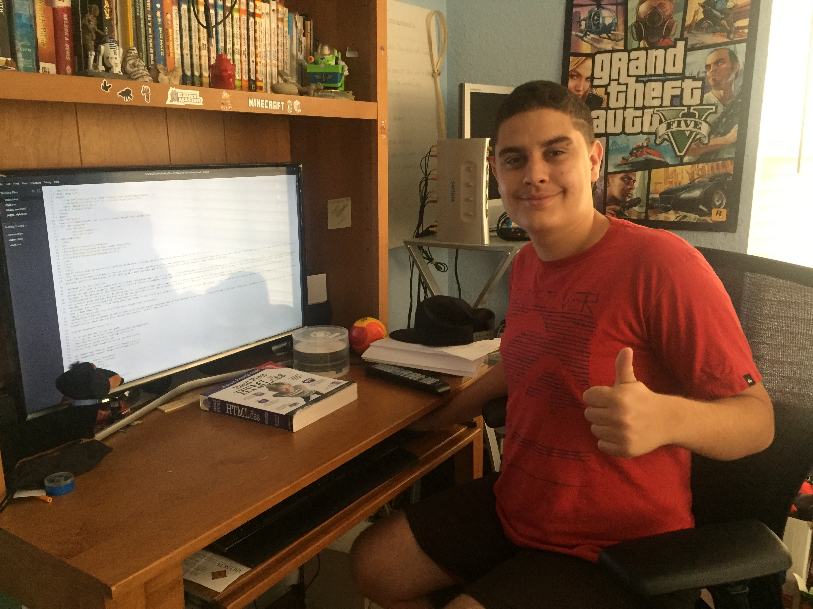
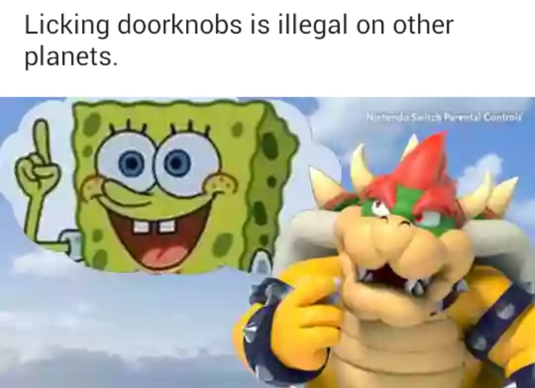

"I find a lazy person to do a hard job.
Because a lazy person will find an easy
way to do it".
-Bill Gates
Hi there! My name is Frank, or you can call me El Franko, and this is my very own website made for my Web Essentials Final. There's some neat stuff you'll learn about me in my other pages, and you'll also get to see my personal portfolio and resume. So sit back, grab a snack and beverage of your choosing, and enjoy my (somewhat) simple website design.
Behind the scenes image of me coding this site.
What's in this site?
This site contains four pages that all contain information about moi. You'll see a little autobiography on my self along with some of my interests. You'll have a look at my portfolio, where I'll show some of my graphic design art and other projects. And finally, you'll a look at my handmade resume, and all the important information about my career. There's not much on these sites but at least it's something, right? Right? Right?!
What is the purpose of this site?
The purpose of this site is, as stated earlier, a couple of sites that allows visitors to get to know about me. But the real purpose of this site is for a final assignment for my Web Essentials, mostly so that I can get a decent grade and pass and have a bright and successful future. Who on Earth would want L'il o'l Me to not succeed in life? Probably nobody, I think.
Why is this site filled with so much humor?
Because I'm a weirdo. I like being weird and funny. I just try my best to keep my site visitors entertained. What more do you want from me, eh? Also I have an unealthy addiction to memes. Especially Dank Memes. So here, have a dumb meme.
Anything else?
Well, for this assignment we had to look up an interesting web technique that we must inplement on our sites. As I have mentioned in the Final's discussion, I am adding an interactive Tic-Tac-Toe game that I found on Dynamic Drive, where you can play against the computer. Anyways, have fun!
 |
|
|
|
|
|
|
|
|
Tic-Tac-Toe game made by Brian scriptasylum.com/bgaudiodr/
Modified by Yossi Cohen yossi@prosite.co.il